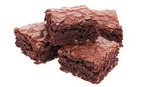

Recipe for Brownie

Description
A recipe for making the best brownie.
Ingredients
- Unsalted butter.
- White Sugar.
- Vanilla extract.
- Eggs.
- All-purpose flour.
- unsweetened cocoa powder.
- Salt.
- chopped walnuts.
Steps
- Preheat oven to 350 degrees F (175 degrees C). Line one 9x9-inch baking pan with foil and spray with cooking spray.
- In a saucepan over medium-heat, melt butter. Stir in sugar until dissolved. Remove mixture from heat. Gradually pour melted butter into beaten eggs, whisking constantly, until mixture is fully incorporated. Stir in vanilla.
- Sift flour, cocoa, and salt together. Add flour mixture to butter mixture, mixing until combined. Stir in walnuts. Spread batter into the prepared pan.
- Bake in preheated oven until brownies are set (a toothpick inserted in the center should have small crumbs clinging to it, rather than wet batter), 45 to 50 minutes. Do not overbake!